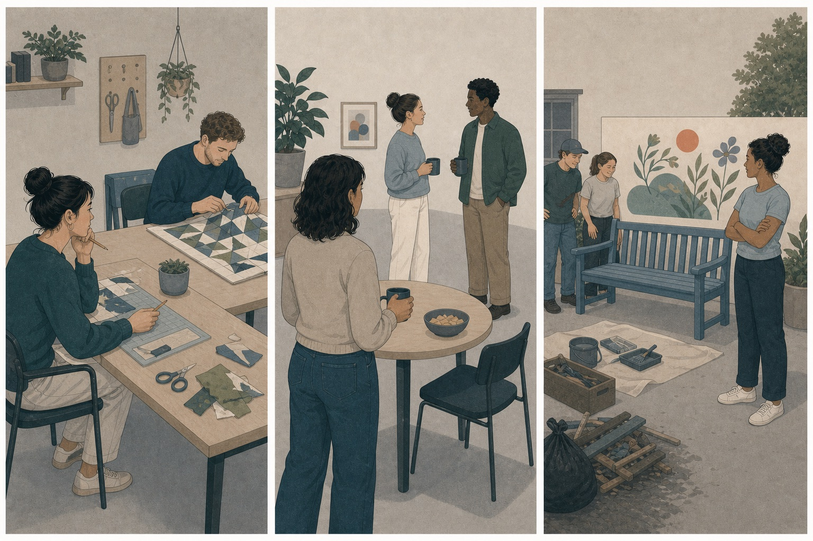
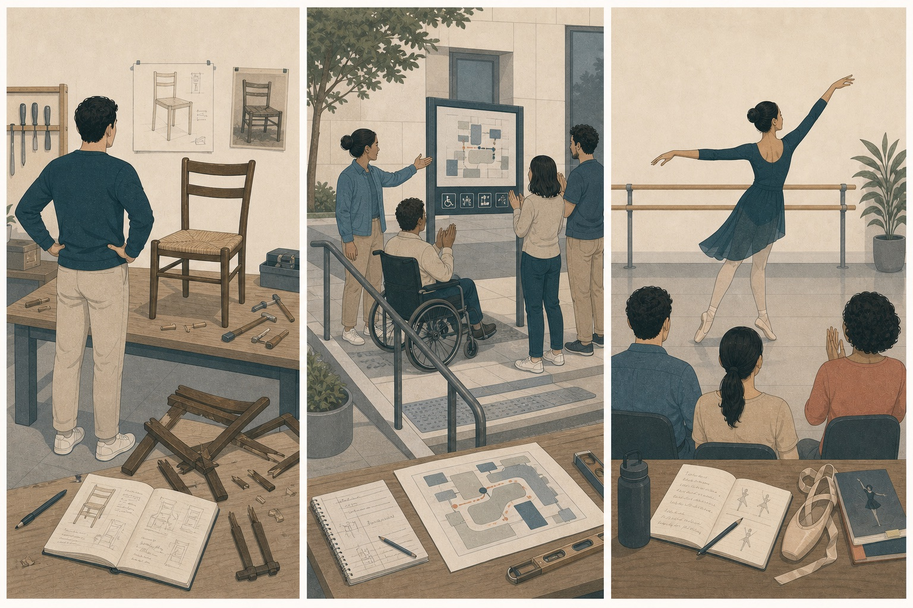

同事展示了你也想拥有的设计能力。你一边不舒服，一边开始研究他用了什么方法。
先判断，再展开
羡慕更突出。比较揭示了自己重视但缺少的优势；研究方法说明它可能走向自我提升。
OPTIONAL READING · SOCIAL COMPARISON
羡慕关心“别人拥有而我缺少的东西”，嫉妒关心“重要关系中的位置可能被第三者取代”，骄傲则把注意力放在“这是我促成的成果”。它们都涉及自己与他人，却不是同一种比较。
READ FIRST · NAME SECOND
不要先判断情绪好坏，先找它保护的是优势、关系位置，还是自我价值。
羡慕更突出。比较揭示了自己重视但缺少的优势；研究方法说明它可能走向自我提升。
嫉妒更突出。焦点不是新人拥有的能力，而是原有联结可能被第三方改变。
骄傲更突出。有价值的结果被部分归因于自己的投入、判断或能力。
EVENT FIRST
羡慕指向想要的优势，嫉妒指向受威胁的关系，骄傲指向自己的贡献。

ONE-MINUTE COMPARISON
他有我想要的能力、资源或处境。
靠近学习 · 竞争 · 也可能贬低我珍视的关系位置可能被别人取代。
监视 · 拉回关系 · 防御这个好结果说明了我的投入或能力。
展示 · 分享 · 继续挑战THREE SOCIAL APPRAISALS
三种情绪都让自我进入画面，但比较的参照物完全不同。
ENVY · 别人拥有我重视的优势
当别人拥有自己重视、但目前缺少的能力、资源、成就或处境，向上的社会比较会暴露这段差距，并产生想获得相似优势的羡慕。
对方拥有什么，我为什么也想要，这段差距能否缩小。
为什么他能做到？我也想拥有。如果我学会其中的方法会怎样？
靠近学习、提高投入和竞争；也可能贬低对方或希望优势消失。
对方拥有什么，而这揭示了我的哪项愿望？
比较可以把注意力转向提升自己的方法，也可能把注意力转向拉低优势者。情绪说明差距有意义，但并不决定必须选择哪一种行动。
JEALOUSY · 重要关系的位置受威胁
当一段重要联结中的位置、关注或排他性受到第三方威胁，你可能开始警觉、比较和试图恢复关系，这种三方结构更接近嫉妒。
我与重要对象之间的联结是否正在被第三方改变。
我是不是不再重要了？他会不会取代我？我们的关系发生了什么？
确认关系、拉回注意、监视竞争者、表达需要，也可能控制或攻击。
我真正害怕失去的是谁的关注、哪段联结或哪个关系位置？
感到位置受威胁，不等于关系真的被背叛。健康处理需要核对约定和行为，并表达具体需要；情绪本身不授权监控、羞辱或限制他人。
PRIDE · 好结果与自己的贡献相连
当一个有价值的结果被归因于自己的努力、判断、技能或某项身份品质，自我评价会被抬高，并产生展示、分享或继续挑战的骄傲。
我在结果中做出了什么贡献，它说明了我的哪项能力或价值。
这部分确实是我做到的。我的努力起作用了。我有能力承担这件事。
挺直身体、展示成果、与重要的人分享，并愿意挑战更困难任务。
这个结果里，哪些部分确实来自我的投入、能力或选择？
对具体贡献的骄傲可以准确且稳定；把一次成功扩大成“我在所有方面都高于别人”，或需要持续贬低别人维持自我，则更接近傲慢式的自我评价。

CASE ATLAS
先找结构，再看强度；不要把一种情绪锁死在恋爱、竞争或领奖场景。
NEAREST NEIGHBORS
羡慕可以只涉及两个人；嫉妒通常需要一个受威胁的联结和第三方。
骄傲突出自我贡献和能力；满足突出结果与期待相符。你完全可能有骄傲而没有满足。
社会情绪值得被听见，但仍要另外核对真实关系、约定、行为和证据。
把句子补完整：我想要对方的____；我怕第三方改变我与____的关系；我为自己完成____感到骄傲。
MIXED EMOTIONS
你们原本一直互相支持。朋友拿到一个你也申请过的机会，开始和新的合作伙伴密切工作；与此同时，你刚完成的项目也得到了明确认可。
朋友获得了你同样重视、却没有得到的机会。
新伙伴可能改变你们原先稳定的联结与位置。
自己的项目结果仍然真实证明了投入和能力。
一种情绪不必取消另一种：既羡慕朋友，也担心关系，同时为自己做成的事情骄傲，是可以同时成立的三条评价。
RETRIEVAL
先指出优势、关系或贡献，再决定情绪词。
你看到同龄人完成了很成熟的作品，开始拆解他的练习顺序。
向上比较暴露能力差距，并把行动推向学习和提升。
伴侣与新朋友共同参加活动，你并不想要对方的任何优势，只担心自己不再被优先考虑。
焦点是重要关系的位置，而不是想占有第三方的能力或资源。
团队获奖，你很高兴，但知道核心方案并不是自己提出的。
好事值得庆祝，但个人骄傲还需要把结果合理归因于自己的贡献。
同事的表达能力让你不舒服，你希望下次自己也能做到，而不是希望他失败。
差距推动向上提升，没有把主要行动指向拉低对方。
你完成一次费力交付，结果刚好达到原定标准，也明确知道关键部分由自己解决。
达标对应满足；自我贡献对应骄傲。你也可能只有后者而没有“够了”的体验。
好友最近很忙，回复变慢，但没有第三方关系线索，你开始担心联结变淡。
缺少第三方竞争结构时，不必急着命名为嫉妒；可能是在担心联结不足。
TRANSFER
用三步把情绪提供的信息与真正要采取的行动分开。
只有“我—他—优势”更接近羡慕；出现“我—重要对象—第三方”更接近嫉妒；“我—行动—成果”更接近骄傲。
把羡慕转成学习路径，把嫉妒转成事实核对与具体沟通，把骄傲落在可追溯贡献上。
情绪可以被承认，行动仍需尊重事实、关系与他人自主。
WHAT TO EXPECT
不是消除比较，而是让比较提供更具体的信息，不再只剩“我不够好”或“别人有问题”。
TAKEAWAYS
它们都不是人格判决。情绪说明你在意什么，行动仍需要事实和边界来决定。
RESEARCH BASIS
页面采用社会比较、关系威胁和自我归因三种评价结构。
区分促进自我改善的良性羡慕与包含拉低倾向的恶性羡慕。
骄傲、羞耻等自我意识情绪与自我评价、归因方式的关系。
研究显示骄傲等正向情绪可以根据不同评价模式加以区分。
把嫉妒放回重要关系及其威胁知觉中研究，而不是把它简化成“比较心强”。
中文“羡慕”“嫉妒”的日常用法经常交叉；这里采用研究中常见的 envy 与 jealousy 区分。任何情绪都不自动证明他人有恶意，也不为监控、贬低或控制行为提供正当性。